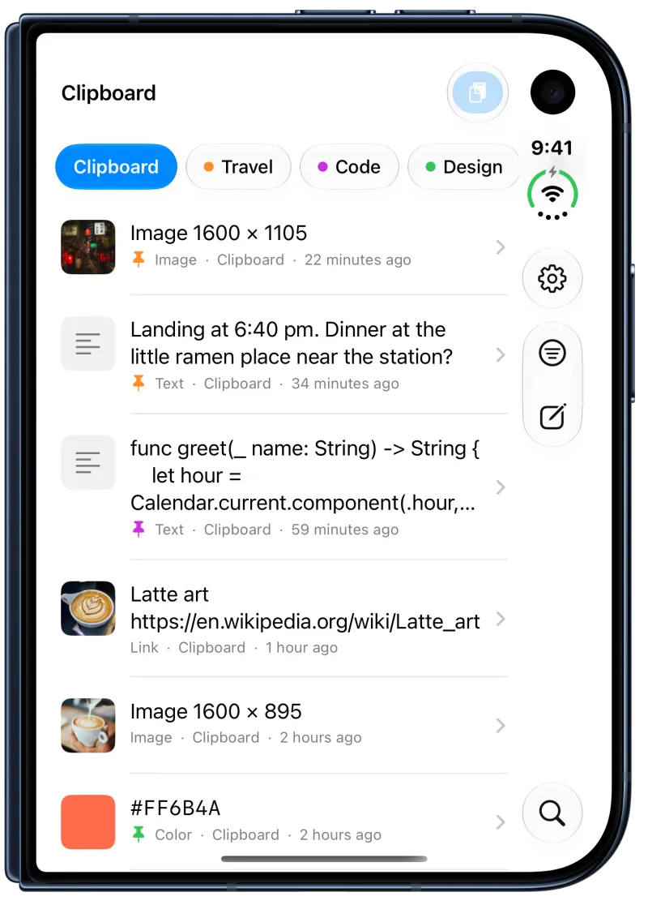

Clipboard history for iPhone
Save what you copy, find it again and type it in any app. Free on the App Store.

Three ways to save what you copy
iOS remembers only the last thing you copied, and it lets apps read the clipboard only while they are open. So ClipShelf gives you three clear ways in:
- Open ClipShelf or its keyboard after you copy. You can turn this off.
- Tap the paste button inside ClipShelf.
- Share text, a link or an image to ClipShelf from any app.


Pinboards for what you keep
Addresses, booking codes, replies and code all have a place. Keep them on named, colored pinboards. Pinned items never expire, however long you keep your history: a day, a week, a month, a year or forever.
A keyboard that knows your clipboard
The ClipShelf keyboard shows your recent items and pinboards in any app. Tap an item to type it. It needs Full Access to read your history, it does not record what you type, and it does not use the network.

Made for iPad and iPhone Duo
On iPad, the list and the item sit side by side. On iPhone Duo, opening the device splits them at the fold, and closing it goes back to the list.
ClipShelf needs iOS 17 or iPadOS 17 or later. Pinboard tabs use Liquid Glass on iOS 26 and later.



How to turn on the ClipShelf keyboard
- Open iPhone Settings, then General, Keyboard and Keyboards.
- Tap Add New Keyboard and choose ClipShelf.
- Tap ClipShelf in the list and turn on Allow Full Access, so it can read your history.
- In any app, switch to the ClipShelf keyboard with the globe key, then tap an item to type it.
How to sync iPhone and Mac
- Sign in to the same iCloud account on each device.
- In ClipShelf on each device, open Settings and turn on Sync.
- Choose everything, or pinboards only if you want your history to stay on one device.
- Use Sync Now when you want it to happen at once.
iPhone questions
Why does ClipShelf not save everything by itself?
iOS does not let any app watch the clipboard in the background. ClipShelf saves what you copied when you open it or its keyboard, when you tap its paste button, or when you share something to it.
Is ClipShelf free on iPhone?
Yes. ClipShelf for iPhone and iPad is free, with no in-app purchases and no ads.
Where is my data stored?
On your device. If you turn on sync, it is also stored in the private database of your own iCloud account. There are no accounts and no servers of our own. See the Privacy Policy.
What can ClipShelf save on iPhone?
Text, links and images. Links can show the page's title and image, which you can turn off in Settings. You can also type a new item yourself, edit the text of an item, and search your history or filter it by type and date.
Does it work with my Mac?
Yes, with ClipShelf for Mac. Turn on iCloud sync on each device with the same iCloud account. You can sync everything or only your pinboards.